Daily life, Food, Drinks, Desserts
A list of places to munch
Updated April, 29, 2024
Have Tried
-
Restaurants
- Shang Artisan Noodle, Las Vegas. 8/10
- Taco El Pastor, Las Vegas. 9/10
- Gladiator Burger, Waterloo, Canada. 8/10.
- Raku Udon, Queen St. Downtown Toronto, Canada. 9.5/10, best udon I've ever had.
- PiChaiYuan Hotpot, Rowland Heights. 8.5/10, reasonable price.
- Tokyo Ramen & Sushi, Diamond Bar, CA. 8/10.
- Los Amigos, Walnut, CA. 9/10, cheap and delicious tacos.
- LA District Market. A large variety of delicious food. A bit pricey though. 8.5/10.
- Euporium Thai, LA. 8.5/10. Free sticky rice cake for birthdays
- Sea Harbor, Rosemead. Best Dim Sum, one Michelin Star, 9.5/10
- Slurpin Ramen Bar, City of Industry, CA. 7/10
- Din Tai Fung, Arcadia, CA. 8/10
- Tatsu Ramen, LA. 8/10
- Lotus of Siam, Las Vegas. 7/10
- Thumbling, West Covina, CA. 7.5/10
- Taiko Japanese Restaurant, Irvine. 8/10
- Coco Ichibanya, LA, Irvine. 8/10
- Pepper Lunch, Irvine. 9/10
- Happy Harbor, Rowland Heights. 9/10
- Young Dong Tofu. 5/10
- 88Q Korean BBQ, Rowland Heights. 7.5/10
- Chubby Cattle BBQ. Horrible wait time, but good food, 8/10
- Hokaido Sushi, Saigon, 1st District. 9/10
- Pho Thin by SOL, Saigon, 2nd District. 8.5/10
-
Boba & Café
- The Coffee (ザ•コーヒー), King St. W, Downtown Toronto, Canada. 9/10.
- Torotea, Diamond Bar, CA.
- 3Catea, Irvine. 9/10
- Gong Cha, City of Industry, CA. 8/10
- GOOMO boba tea shop, Walnut, CA. 8/10
- Phuc Long, Garden Grove, CA. 6/10
-
Bars
- Ghost Bar, Las Vegas. 9.5/10
- The Gallery Lounge, Downtown LA. 8/10
- The Grayson Bar, Downtown LA. 8/10
- Spire 73, InterContinental LA. 9/10
Have Yet to Try
-
Restaurants
- dPot, Irvine
- Kokiyo Ramen, NPB
- Niku X, LA
- Noodle Nest, Irvine
- Tijuana Taco, OC, CA
- Koyi Sushi, Costa Mesa, CA
- Izakaya Taiko, Fountain Valley, CA.
- Happy Lamb Hotpot, Westminster, CA.
- Japan Village, NYC, Industry City.
- BBQ Chung Dam, LA.
- Chubby Sushi & Ramen, OC, CA.
- Story Bar + Kitchen, Anaheim, CA.
-
Desserts
- Nostimo Coffee, Westminster
- Heybings Desserts & Café, Costa Mesa
- Sweetheart's Dessert Lounge, Anaheim
Gallery
Click on image to view full size.


 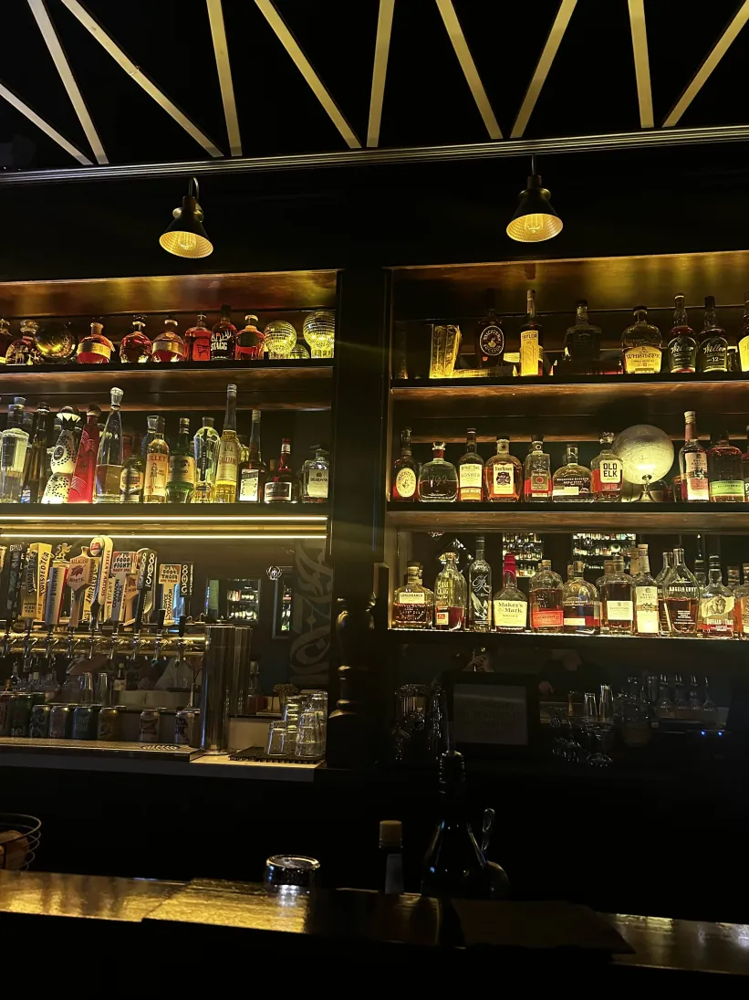
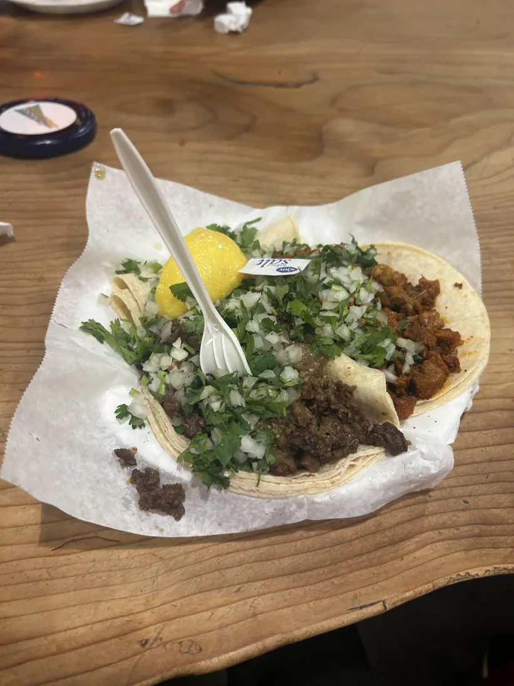
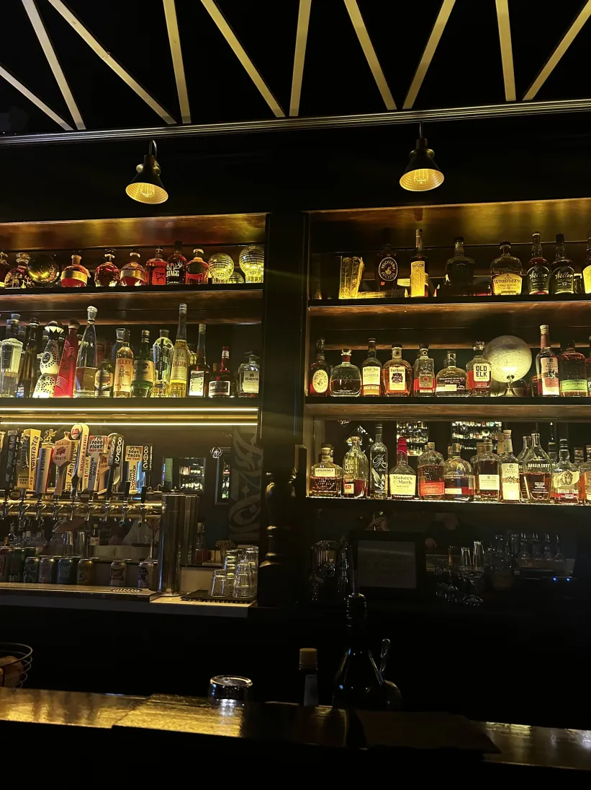
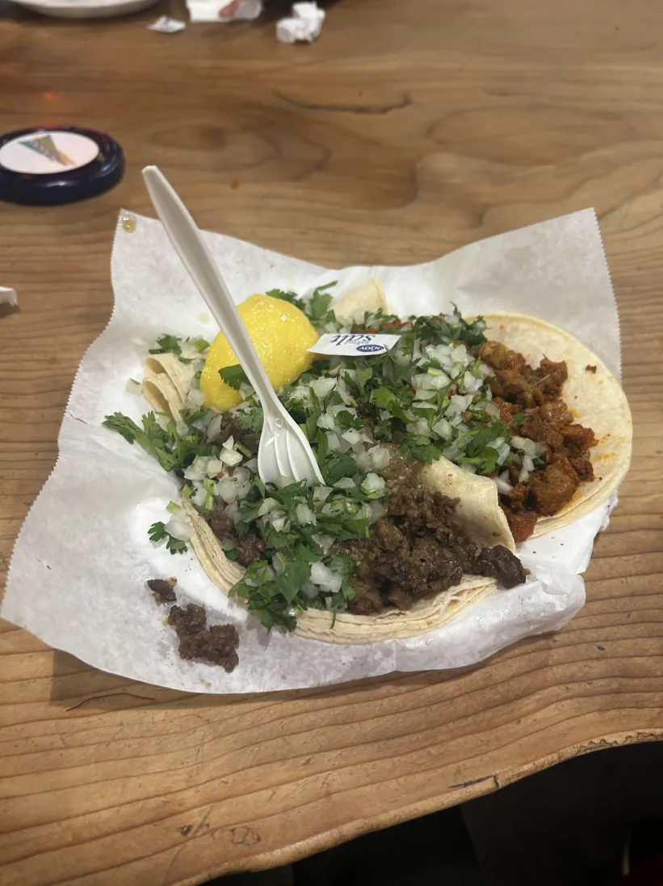

 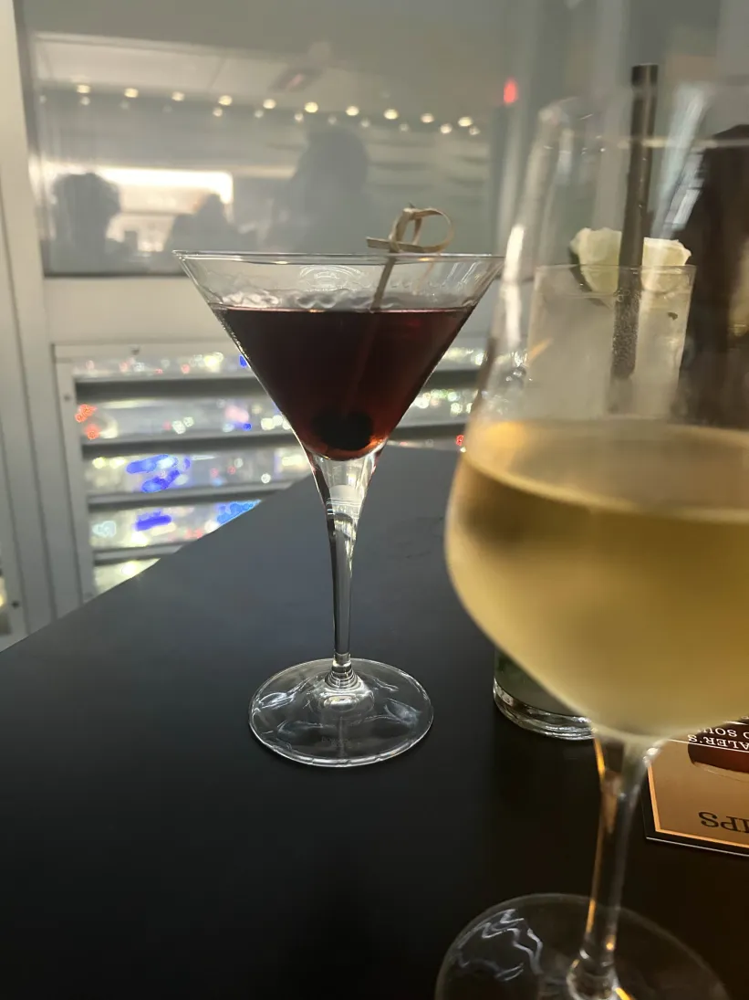
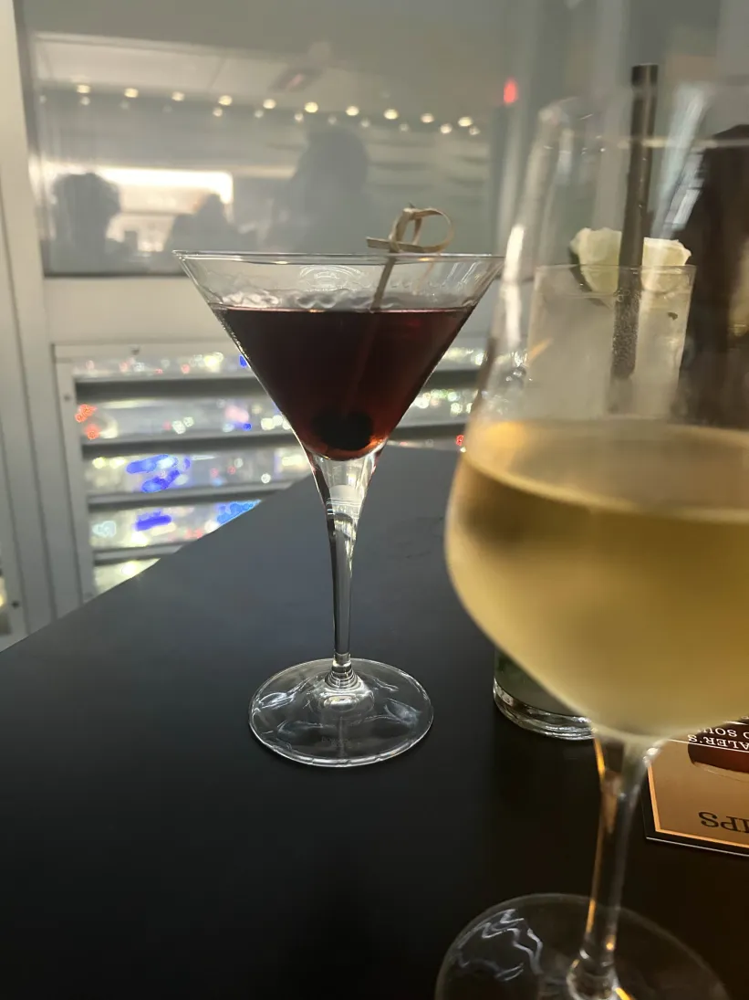
 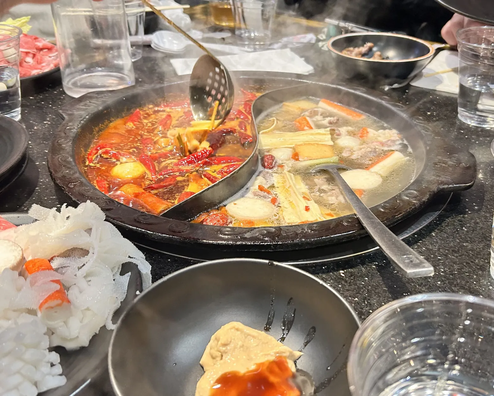
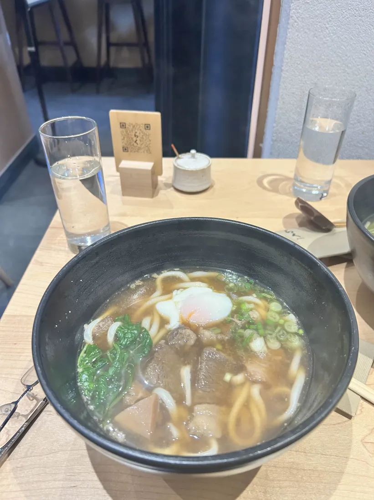
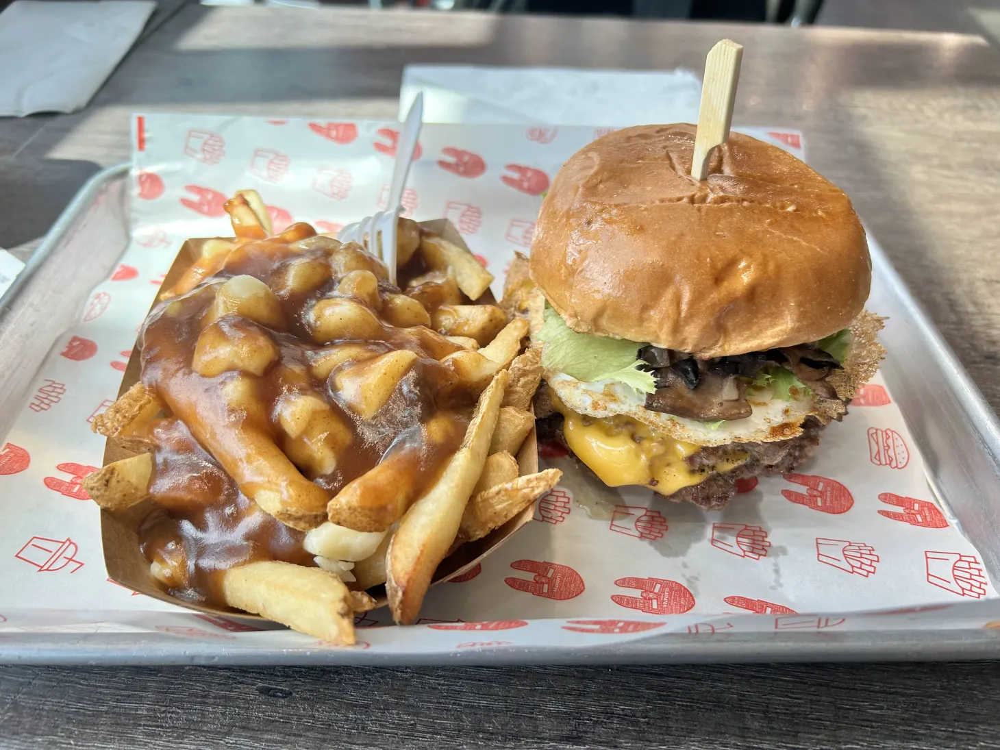
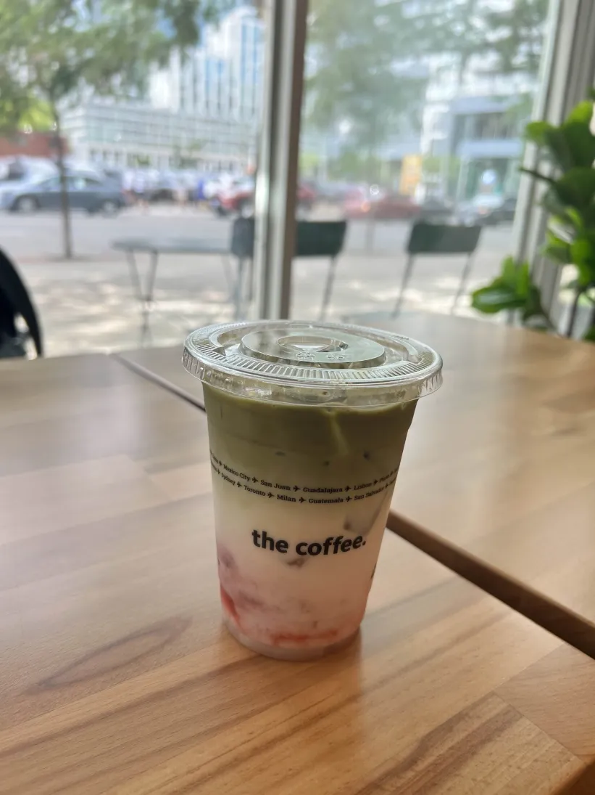
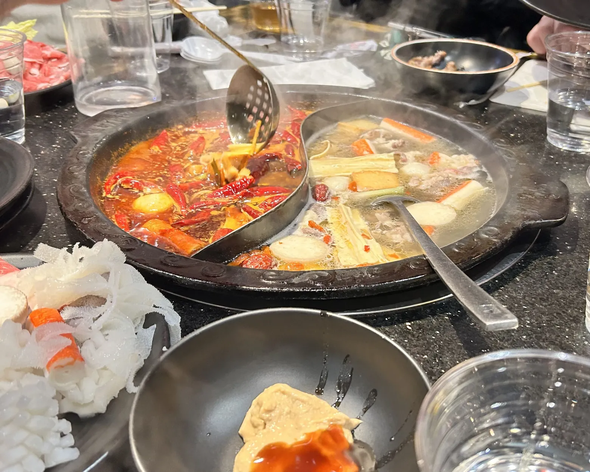
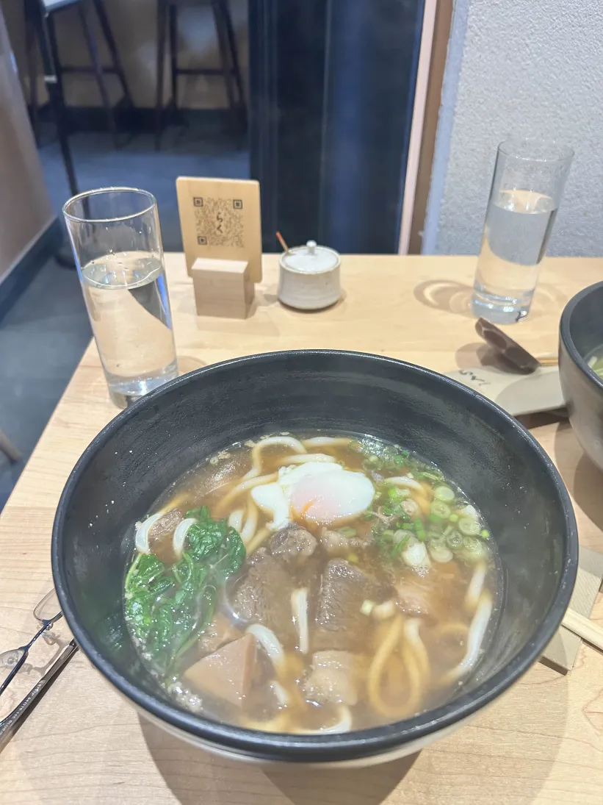
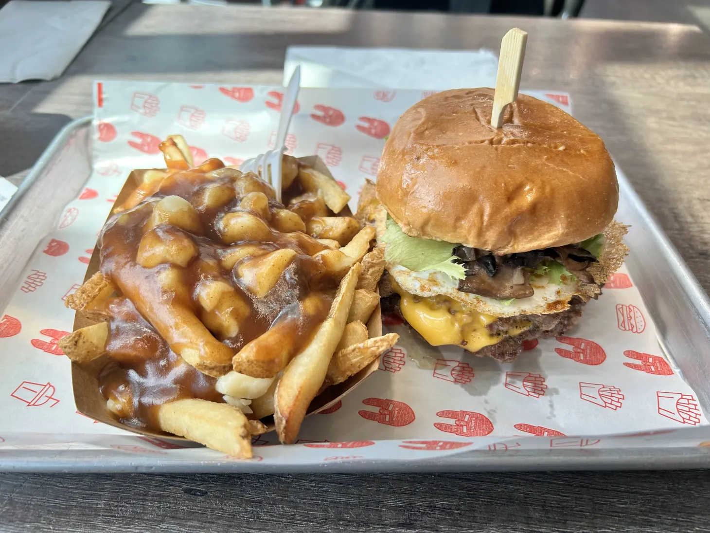
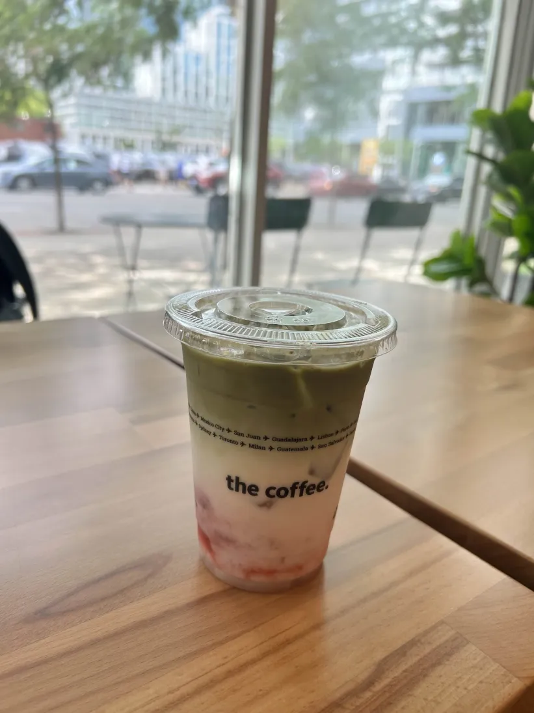